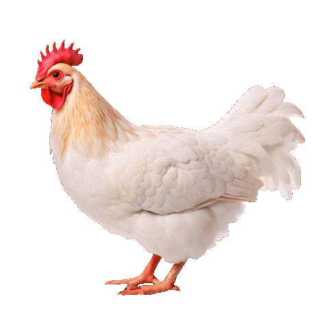

신선함의 비밀을 엿보다


-
진짜 맛있는 닭고기의 비밀이
무엇인지 알고 계신가요? -
정답은 바로
신선함 입니다.
하지만 진짜 신선함은 무엇일까요?
1978년부터 45년 간 오직 ‘신선함'
하나만을 위해 지켜온 하림만의
놀라운 비밀을 발견해 보세요!
Let's Begin the Journey
-
HANDS
ON TOUR -
손 끝으로 발견하는
진짜 신선함의 비밀
Unlock the Secret
-
농장
-
공장1
-
공장2
-
콜드체인
-
집


- STEP 1
-
좋은 닭고기는
건강한 사육에서
시작됩니다.

- 사육환경
-
닭에게도 맞춤 케어가 필요해요.
온도, 습도는 기본!
영양 밸런스까지 고려해 사료도 직접 제조해요.
잘 먹고, 잘 자란 닭만을 키우니까요.

- STEP 2
-
하림의 기술은 신선함을
위한 여정입니다.
- STEP 3
-
8℃ 가공, 살얼음 포장으로
끝까지 신선하게!
- STEP 4
-
가장 신선할 때에
배송이 시작돼요!


- STEP 5
-
최고의 맛은
신선함에서 시작됩니다.
- 오답이에요...
-
워터칠링 방식은 닭고기를 물에 담가 식히는 과정에서 수분을 많이 흡수하게 됩니다.
표면은 탱탱하고 매끄러워 보일 수 있지만, 닭 본연의 풍미가 떨어지고, 여러 닭이 함께 담기기 때문에 교차 오염의 위험도 높아질 수 있어요.
- 와!! 정답이에요!
-
하림은 한 마리씩 냉풍 라인을 따라 약 200분간 식히는 에어칠링 방식으로, 세균 증식은 줄이고 닭고기 본연의 맛과 식감을 지켜냅니다.
표면은 살짝 쭈글해 보여도, 한 입 베어 물면 쫀득하고 촉촉한 식감이 살아있어요.
신선함이 만든 진짜 닭고기, 지금 경험해보세요.